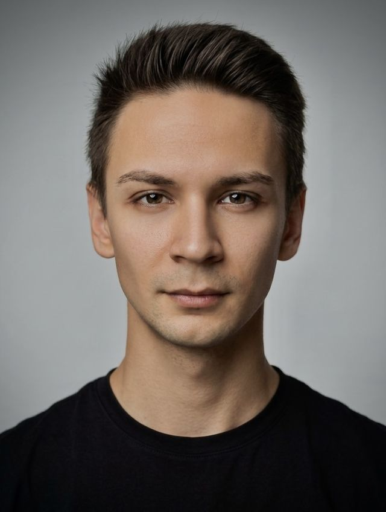

лет в HR
От массового подбора в банке на 850+ человек до стратегического партнёрства с CEO.
Резюме · HR Strategy Partner · People & Culture
HR с 9+ годами опыта построения и масштабирования HR-функций в технологических и продуктовых компаниях с распределёнными и мультиюрисдикционными командами. HR-стратегия, оргдизайн, performance management, talent acquisition, compensation & benefits.

Человечный подход. Измеримый результат.
Ключевые достижения
От массового подбора в банке на 850+ человек до стратегического партнёрства с CEO.
за полгода, Skycoach.
через performance review и регулярную обратную связь, Skycoach.
за счёт перестройки воронки найма и работы с базой в Huntflow, Changellenge.
HR-функция одновременно для двух юрлиц в Польше и Украине, 50+ человек, Iron Invest Group.
9 блоков компетенций, автоматизированная оценка.
190+ сотрудников, прозрачность карьерного роста. Внедрены OKR и оценка 360° на нескольких местах работы.
Опыт работы — 9+ лет
Восемь мест работы: банк, IT, GameDev, Ed-Tech, e-commerce, консалтинг, девелопмент.
март 2026 — сентябрь 2026 7 мес.контракт
HR Operations & Strategic Partner
март 2025 — апрель 2026 1 г. 2 мес.
HR BP → Operations & Culture Lead (HR Strategy Partner)
октябрь 2023 — март 2025 1 г. 6 мес.
HR BP / HR Director
апрель 2022 — сентябрь 2023 1 г. 6 мес.
HR Generalist
февраль 2021 — март 2022 1 г. 2 мес.
HR People Partner
сентябрь 2020 — март 2021 7 мес.
Координатор штаба волонтёров
май 2018 — август 2020 2 г. 4 мес.
HR-менеджер (Middle → Senior)
декабрь 2016 — май 2018 1 г. 6 мес.
HR-менеджер
Масштаб
Численность сотрудников компании на момент работы, без учёта ACF.
Ключевые навыки
Языки
Образование
Повышение квалификации
Рекомендации
CTO и CEO Skycoach · CEO и CPO Waistline · Head of HR Рокетбанка · исполнительный и коммерческий директора Ivideon. Контакты предоставлю по запросу.